Concierj
An AI activation layer that recovers boutique-hotel guests lost in the pre-booking funnel, built solo 0 → 1 in 12 weeks
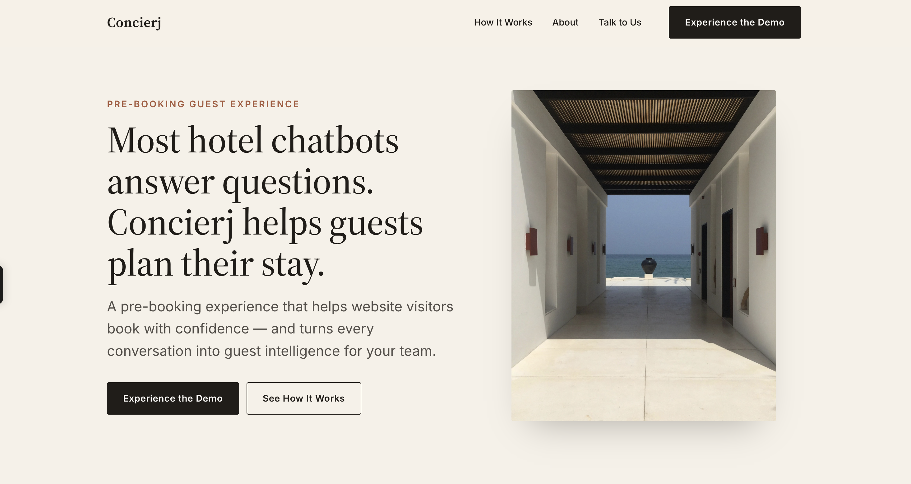
Overview
Boutique hotels lose guests before they ever book. The drop-off has nothing to do with price or availability: there's no consideration stage in the funnel, no system to answer questions in real time, qualify fit, or move an interested guest toward a booking decision. I built Concierj to close that gap and act as a property's activation layer, capturing interested guests during consideration and converting them to bookings.
The result: an AI-powered guest communication and intelligence layer, built solo in 12 weeks from concept to live launch.
Building it was also how I taught myself to design, build, and ship an AI product end to end, not only close a market gap.
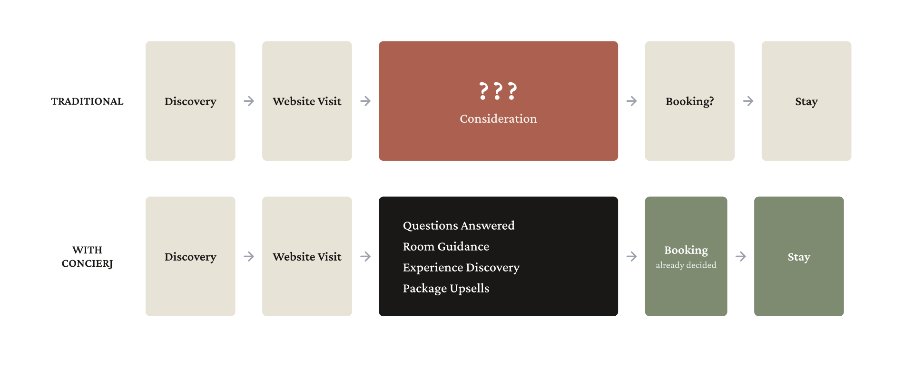
- 1Research
- 2Funnel & Journey Design
- 3What I Built & Why
- 4Testing & Iteration
- 5Prototype & Results
01 - Research
I ran 59 interviews across four stakeholder groups: boutique hotel owners, front desk staff, guests, and travel agents, to find exactly where the pre-booking funnel broke down and for whom. I wasn't testing a solution; I was diagnosing the drop-off.
Alongside the interviews, I sized the market for AI-powered hospitality tools, mapped the competitive landscape, and defined which data points the chatbot and guest intelligence report needed to track to make the funnel measurable.
02 - Funnel & journey design
Research surfaced a missing consideration stage between website visit and booking. The next step was defining how guests would move through it, what data to collect at each point, and when a human needed to step in.
I evaluated several technical approaches and settled on a streamlined Botpress and Claude stack, cutting the complexity the research had flagged as unnecessary. The resulting flows, architecture, business rules, and data requirements became the blueprint for the prototype.
The guest journey map
After the interviews, I mapped the guest journey to see how prospective guests move through a hotel website during the decision stage. The map located the friction points, information gaps, and drop-off moments in the booking funnel, and where Concierj could intervene.
One insight stood out immediately: purchase intent is already high before booking, but guests get no guidance during consideration. Comparing rooms and experiences while hunting for specific information causes decision fatigue, and decision fatigue causes abandonment.
Key design decision: guided prompt bubbles that surface common guest questions and next steps. They cut cognitive load, speed up information discovery, and point guests toward what they're most likely looking for.
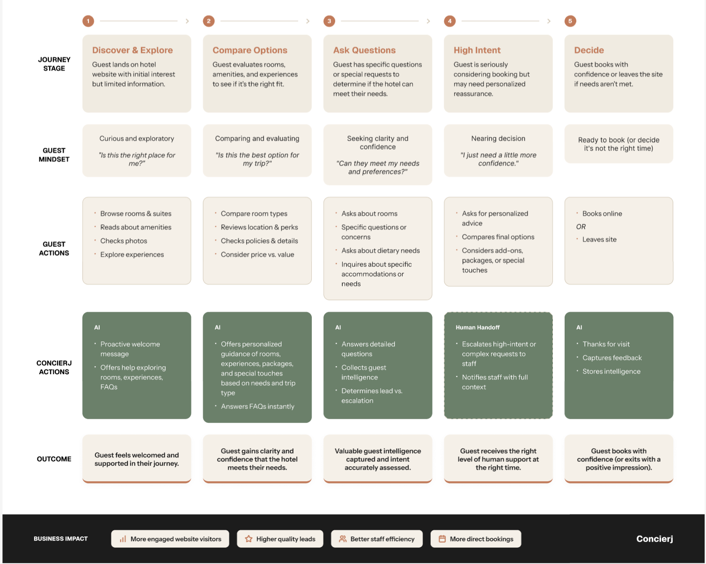
Feature map
I turned the findings into a feature map to prioritize and scope the MVP: the core capabilities needed to support guests through the consideration stage without adding to staff workload.
Research reshaped the product four times over the course of the build.
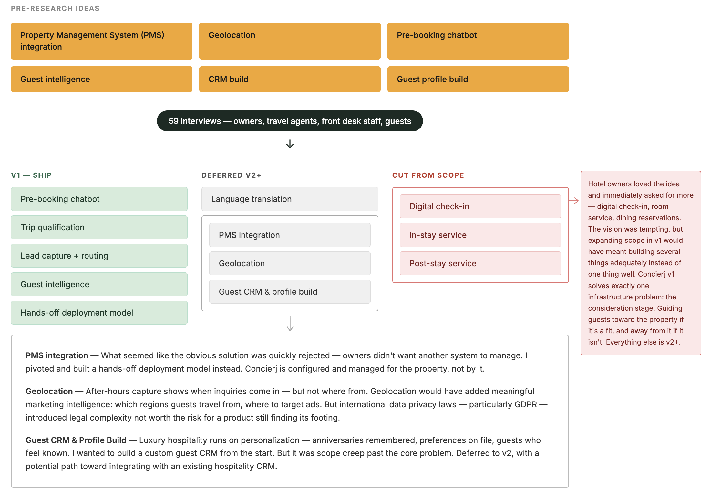
Low-fidelity systems design
I started with low-fidelity sketches to work out how to identify and route different guest segments through the experience: lead qualification, escalation pathways, and human handoff triggers.
From there I mapped end-to-end conversation flows, tracing how a guest moves from an initial question to a booking decision, or to a human handoff through lead capture or escalation.

03 - What I built and why
The goal wasn't a FAQ chatbot. It was a system that actively guides guests through the pre-booking journey while giving hotel staff something useful behind the scenes. Every component maps to one of Concierj's three core pillars:
Conversational workflow architecture
What I built: standard nodes (after hours, guest feedback, new vs. returning guests) and an autonomous node (decision tree for room and experience recommendations, lead capture, escalation paths).
Why: interviews showed guests wanted guidance, not FAQ answers. The system needed to handle common questions, escalate high-intent guests, and build on the conversation as it went.
Key design decision: the autonomous node handles 98% of the service, proactively guiding guests through trip planning using personalized recommendations and suggested conversation paths, while capturing guest intelligence at the same time.
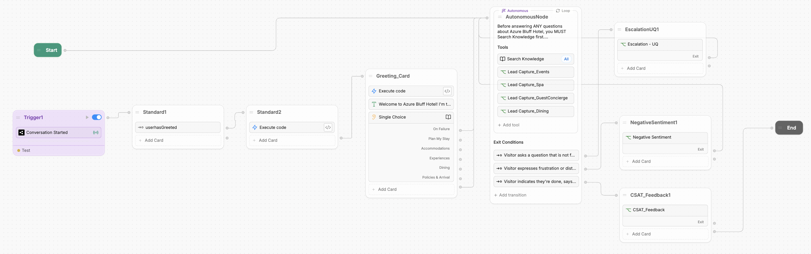
Knowledge base design
What I built: structured hotel information repository including room data, amenities, dining, policies, and local experiences.
Why: AI output is only as good as the information behind it and the guardrails against hallucination. Early testing showed generic responses cost guest trust.
Key design decision: organize content around guest decision-making rather than internal hotel departments, to speed up AI response time and cut token usage.
Human handoff and notifications
What I built: automated staff alerts, conversation summaries, and guest contact information.
Why: hotels don't need more conversations. They need visibility into the ones that matter.
Key design decision: deliver actionable context rather than raw chat transcripts.
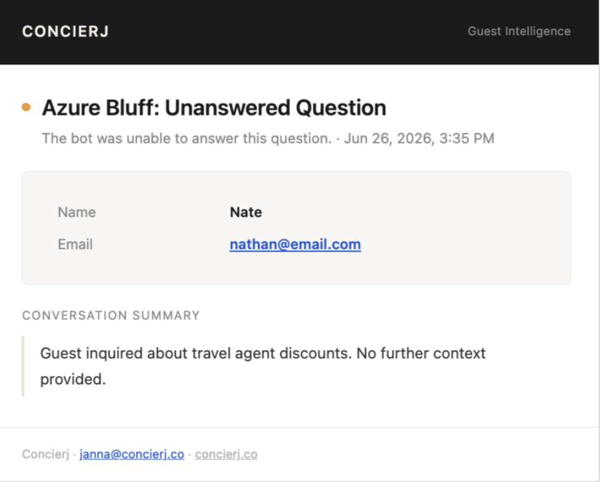
Guest intelligence report
What I built: inquiry trend reporting, guest behavior insights, common questions, conversion indicators, and recommendations.
Why: every guest conversation is funnel data. Boutique hotels rarely capture or analyze it.
Key design decision: turn individual conversations into cohort-level insight on where guests convert and where they don't.
04 - Testing and iteration
I built a fully functional, high-fidelity prototype of Concierj in Botpress and tested it through hundreds of real conversations and simulated guest scenarios with family, friends, advisors, and prospective users. Testing ranged from structured booking scenarios to open-ended sessions built to surface edge cases and failure points.
Finding #1: guests weren't booking a room. They were planning a trip.
During testing I tried several approaches to starting that journey. Each improved information discovery, but testing surfaced something the prompts weren't addressing: guests needed confidence in the booking decision, not just an answer to a question. The final solution balanced information retrieval with personalized guidance.
Iteration 1: lead with intent
The first version asked guests to self-identify their trip type, mirroring how an in-person concierge would qualify a guest. Testing surfaced a gap: travelers with family trips, group travel, or simple logistics questions didn't see themselves in any option, and even guests with a clear trip type felt boxed into one narrative before they'd asked their actual question.
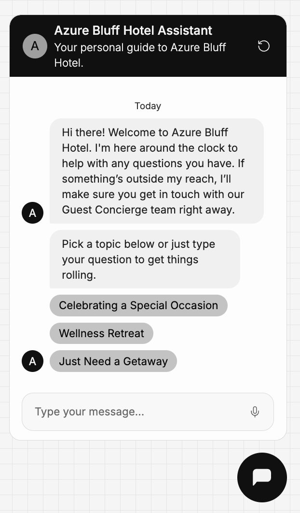
Iteration 2: lead with information
Next I replaced the qualifying prompts with broad category bubbles, closer to a standard FAQ menu. Guests responded to the directness: questions got answered fast, with no guesswork about where to click. But the format created its own friction. With no framing around intent, guests comparing rooms or experiences across categories hit decision fatigue.
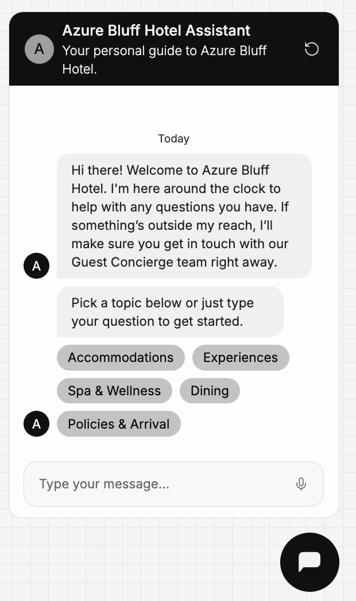
Solution: lead with guidance
The winning version combined both: low-friction categories for guests who just needed information, plus a new "Plan My Stay" option for guests who wanted guidance. Plan My Stay opens with one prompt, tell me about your trip, and returns a personalized recommendation: specific rooms, activities, and touches tailored to what the guest shared, so they can picture themselves at the property before any logistics enter the conversation. From there, guests move into practical questions already sold on the stay. Engagement rose noticeably after the change, and Plan My Stay is now a core, defining feature of Concierj.
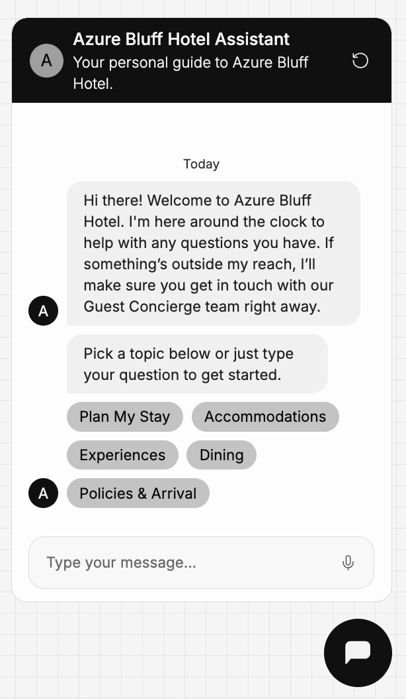
Finding #2: different situations need different summaries
Early summaries were accurate but inconsistent. Some buried the signal in detail, others left out context staff needed for follow-up. Through testing and refinement, I built specialized summary frameworks for each conversation outcome, so staff get concise, actionable information tailored to the next step.
Key insight: the most useful summary depends on what action the hotel needs to take.
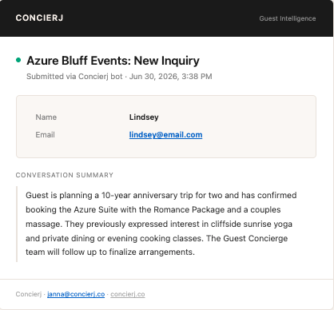
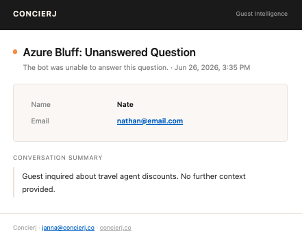
Finding #3: real guests don't follow happy paths
While the chatbot performed well during expected booking scenarios, testing revealed that users rarely follow ideal conversation paths. Participants frequently asked unexpected questions, changed topics mid-conversation, or interacted with the assistant in ways that differed from the designed workflow.
One of the most significant issues emerged when users opened the chatbot and immediately asked a question that was out of the assistant's scope. Rather than gracefully recovering, the assistant became trapped in an error state, failed to continue the conversation, and failed to trigger the escalation workflow.
To improve resilience, I redesigned the conversation routing logic and introduced fallback handling throughout the workflow. When a question cannot be answered through predefined paths, the assistant now routes to an autonomous AI node capable of determining the best next action.
Additional refinements included:
- Expanding fallback handling
- Improved autonomous node instructions
- Enhanced escalation logic
- Dedicated "on failure" routing paths
The assistant became significantly more resilient: fewer dead ends, and guests kept getting support even when conversations moved outside the predefined workflow. The fallback and escalation pathways let the system recover from uncertainty while cutting the odds of an inaccurate or hallucinated response.
Additional iterations:
- Increased chatbot visibility through proactive welcome messages, notification indicators, and sound cues.
- Refined widget sizing and placement to improve discoverability across user groups.
- Adjusted onboarding copy based on user feedback.
05 - Prototype and results
The workflows and user journeys were first designed in Figma, then built as a fully functional prototype in Botpress. I used Claude to generate and refine the custom code throughout development, which let me iterate and test quickly. The prototype went through hundreds of conversational interactions and usability sessions, letting me continuously refine the guest experience, staff workflows, AI instructions, and routing logic.
The result is a fully functional AI-powered guest communication system that guides guests through consideration, escalates high-value opportunities to staff, and turns every conversation into funnel intelligence.
Learnings
- The stated problem is rarely the real one: research showed a mismatch between what hotels were providing and what guests actually needed. Stay flexible on the solution and include real users from day one.
- Speed is a growth tool: building with Claude cut the time between idea and prototype dramatically. The faster a working experience got in front of users, the faster I could catch flawed assumptions, uncover edge cases, and iterate. Less time speculating, more time learning from real interactions.
- AI products are human-workflow products: the staff receiving the AI's output need as much design attention as the guest interacting with it. Handoffs and decision points are part of the product, not an afterthought.
- Shipping a product takes more than design: what started as a side project became a real venture. Beyond the product itself, I had to learn market positioning, technical constraints, and business viability. Growth work is equal parts strategy, adaptability, and persistence.
The product is ready. What's next?
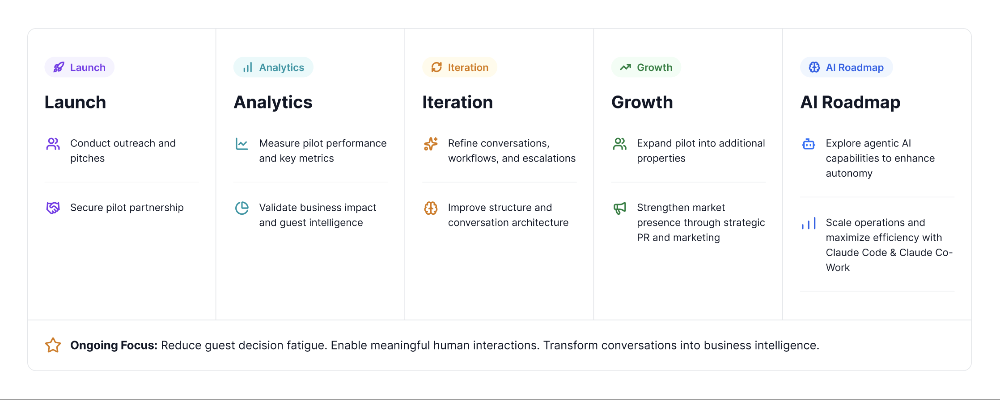